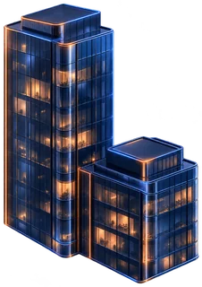
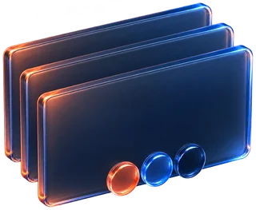
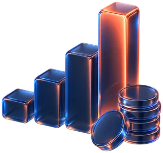
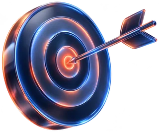
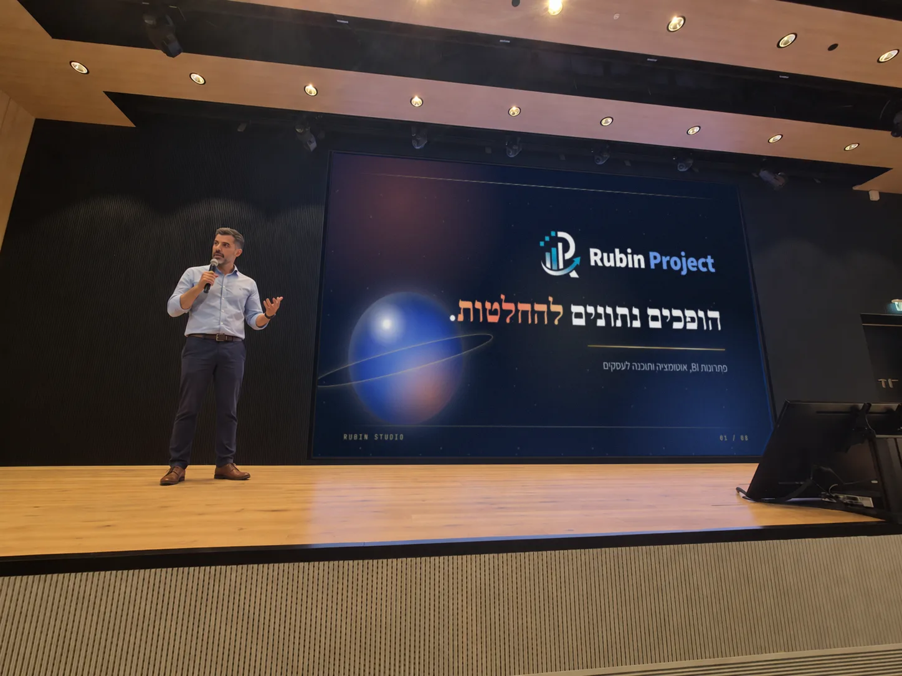
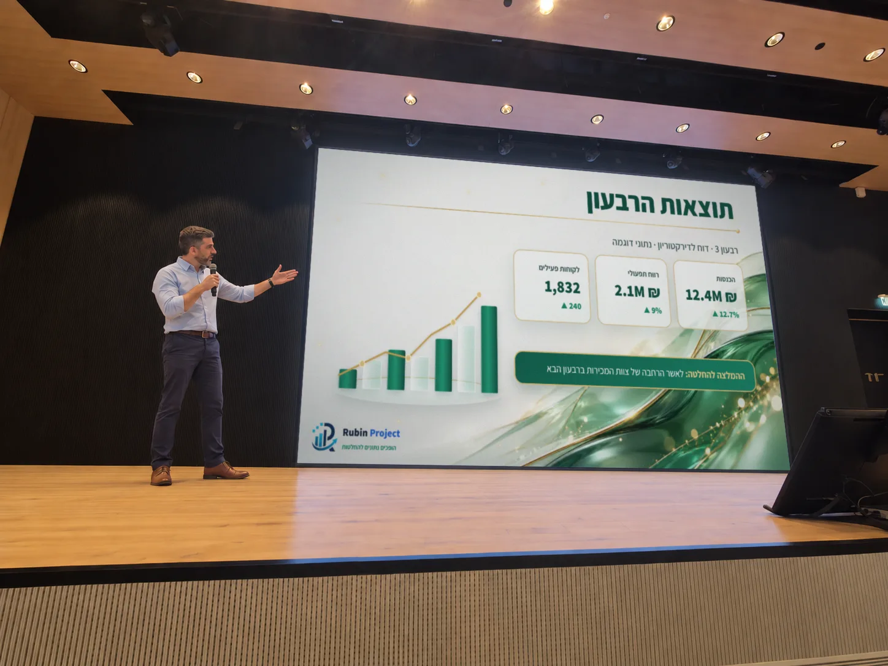
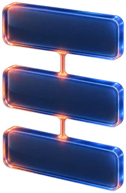
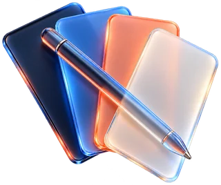
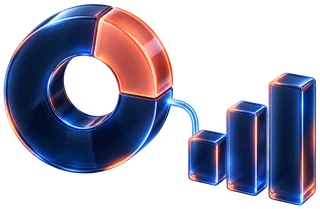

מצגת נתונים שמתעדכנת לבד
דוח רבעוני להנהלה או לדירקטוריון, שמתעדכן מהאקסל או מה-ERP בכל תקופה, בלי להעתיק מספרים ביד.
החומר כבר אצלכם: נתונים, טיוטות ומסמכים. אני מוציא ממנו מסר אחד, בונה סביבו סיפור ומעצב מצגת בשפה של הארגון. ואם המספרים משתנים כל חודש, המצגת מתעדכנת איתם.
נמסרת כקובץ PowerPoint פתוח לעריכה, וגם PDF, קישור HTML ווידאו
מחברים פעם אחת את המצגת למקור הנתונים. מאותו רגע, בכל תקופה יוצא דוח הנהלה מעודכן: הגרפים, המספרים והכותרות. בלי להעתיק מספר אחד ביד.
אקסל, מערכת ה-ERP או מסד הנתונים של הארגון. כשצריך, הכול רץ על השרתים שלכם, בלי יציאה לענן.
גרפים מקוריים של PowerPoint שמחוברים לנתונים, בשפה העיצובית שלכם. אפשר לערוך אותם כמו כל גרף אחר.
בתחילת כל חודש, או בכל תדירות אחרת, המצגת יוצאת מוכנה כ-PowerPoint וכ-PDF, עם המספרים של התקופה.
החומר קיים, הנתונים קיימים, והפגישה כבר נקבעה. אבל המצגת יוצאת עמוסה, נבנית מחדש בכל פעם, ונראית אחרת אצל כל עובד.
עשרים שקפים של טקסט וטבלאות, והקהל מאבד את החוט כבר בשקף השלישי.
מעתיקים מספרים מהאקסל לשקפים, מעדכנים גרפים אחד אחד, ומקווים שלא נפלה טעות.
צבעים, גופנים ולוגו שונים בכל קובץ. הלקוח פוגש ארגון קצת אחר בכל פגישה.
מהתוכן הגולמי ועד הקובץ המוכן להצגה.
דוח רבעוני להנהלה או לדירקטוריון, שמתעדכן מהאקסל או מה-ERP בכל תקופה, בלי להעתיק מספרים ביד.
טקסט גדול, מסר אחד בכל שקף, וקריאה נוחה גם מהשורה האחרונה באולם.

מי אתם, מה אתם עושים ולמה לבחור בכם, בכמה דקות ובלי לאבד את הקהל.

מאסטר, פריסות וצבעים לפי המותג, כדי שכל מצגת בארגון תצא אחידה, גם בלי מעצב.

הבעיה, הפתרון, השוק והתוכנית, במבנה שמשקיעים מצפים לראות. לגיוס ולדירקטוריון.

בונה את הטיעון שלב אחר שלב, ונשארת אצל הלקוח גם אחרי הפגישה, כשהוא מחליט.
היום כל אחד מפיק מצגת בדקה, ורואים את זה מיד. אצלנו כל שקף נבנה לקהל שלכם, בשפה העיצובית שלכם, ונבדק לפני שהוא יוצא.
מה שמנחה כל מצגת
כל טקסט, גרף וצבע נשאר ניתן לעריכה, כך ששינוי של הרגע האחרון לא מחכה לאף אחד. ולצד הקובץ, כל הפורמטים שצריך כדי להציג ולהפיץ.
הקובץ המלא, עם טקסטים, גרפים מקוריים ומאסטר. הארגון ממשיך לעבוד עליו בעצמו, גם אחרי המסירה.
להפצה, להדפסה ולשליחה במייל, נראה אותו דבר בכל מחשב. גם הטיוטות נשלחות כך, לצפייה בלבד.
המצגת נפתחת בכל טלפון ובכל דפדפן, עם תנועה, ומציגה תצוגה מקדימה כשהקישור נשלח בוואטסאפ.
המצגת כסרטון, למסך בכנס, לרשתות או לאתר.


מצגת אמיתית שרצה בתוך העמוד. לוחצים על לשוניות, גוררים סליידר, עונים על שאלה, ומחליפים את המותג כולו בלחיצה. כך היא נראית גם בקישור ששולחים ללקוח.
דוח להנהלה ולדירקטוריון
נתוני דוגמהצמיחה של יותר מ-12% שני רבעונים ברצף
הרווח התפעולי צומח לאט יותר מההכנסות
לאשר הרחבה של צוות המכירות ברבעון הבא
את אותה מצגת ראיתם עכשיו בשלושה מותגים. שלכם יכולה להיות הרביעית.
לתיאום שיחהטיפ: לחצו על המצגת והשתמשו בחצים במקלדת.
לצפייה נוחה בטלפון: סובבו אותו ופתחו את המצגת במסך מלא.
ארבעה שלבים, ובכל אחד ברור מה מקבלים.
מה המצגת צריכה להשיג, מול מי היא עולה, ומה כבר יש לכם: תוכן, נתונים, ספר מותג.
סיכום אפיון בכתבמסדרים את החומר לסדר שהקהל יכול לעקוב אחריו: פתיחה, טיעון, נתונים וסיכום. מקובץ אקסל, ממסמך ארוך או משיחה.
מבנה המצגת לאישורקודם שקף דוגמה לאישור הכיוון, ואז כל המצגת. הטיוטות נשלחות לצפייה בלבד, כ-PDF או כקישור.
שקף דוגמה, ואז הכולשלושה סבבי תיקונים כלולים. בסופם מקבלים את הקובץ הפתוח לעריכה, ולפי הצורך גם PDF, קישור HTML או וידאו.
PowerPoint פתוח, ו-PDF, קישור או וידאוהסכם סודיות (NDA) נחתם עוד לפני שאני פותח את הקבצים שלכם, וכל חומר רגיש נשאר בתוך הפרויקט.
הנתונים נשארים אצלכם. מצגת נתונים יכולה לרוץ על השרתים של הארגון, בלי ענן.
Rubin Project הוא ספק של חברת נמלי ישראל, חברה ממשלתית, ומערכת Verifix שלו רצה שם בפרודקשן.
על Verifix ←
מתחיל מההחלטה שאתם רוצים בסוף הפגישה, ובונה את השקפים לאחור ממנה.

שפה חזותית לפי ספר המותג, ותנועה רק כשהיא משרתת את המסר.

גרפים שמחוברים לנתונים, והפקה אוטומטית מהאקסל או מה-ERP. זה הצד של Rubin Project.
מצגת טובה היא החלטה שקל לקבל.
קודם מבינים מה הקהל צריך להחליט, אחר כך מעצבים.
כל מצגת מתומחרת לפי ההיקף שלה. אחרי שיחת האפיון תקבלו הצעת מחיר בכתב, לפני שאתם מתחייבים לשום דבר. ההצעה כוללת גם לוח זמנים, לפי מועד ההצגה שלכם.
קובץ PowerPoint פתוח לעריכה, ולפי הצורך גם PDF, קישור HTML שנפתח בכל טלפון, וסרטון וידאו. במהלך העבודה הטיוטות נשלחות לצפייה בלבד, כ-PDF או כקישור, והקובץ הפתוח נמסר עם התוצר הסופי. שלושה סבבי תיקונים כלולים.
כן. כל טקסט, גרף וצבע נשאר ניתן לעריכה ב-PowerPoint. מי שמכין הרבה מצגות יכול להזמין גם תבנית ארגונית, עם מאסטר ופריסות מוכנות.
הגרפים במצגת הם גרפים מקוריים של PowerPoint, שמחוברים לנתונים. בכל סוף תקופה ההפקה רצה מהאקסל, מה-ERP או ממסד הנתונים, והמצגת יוצאת עם המספרים החדשים. בשיחת האפיון נבדוק מאיפה הנתונים מגיעים ומה אפשר לחבר.
כן. המצגת נבנית לפי הצבעים, הגופנים והלוגו שלכם, ואם יש תבנית קיימת, עובדים בתוכה.
כן. ההסכם נחתם לפני שאני מקבל את החומרים, וכל מה שרגיש נשאר בתוך הפרויקט.
שיחה קצרה, בלי התחייבות. נבין מה המצגת צריכה להשיג, ותקבלו הצעת מחיר בכתב.